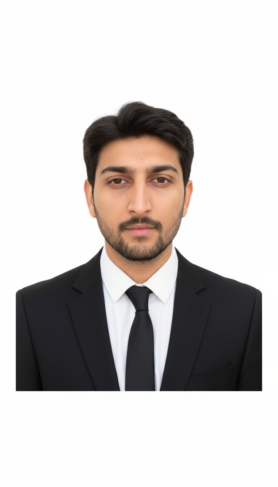

01
Foundation
Months 0–3
Programming Fundamentals
OOP
OOD
I'm Vishal — a CS student at Hochschule Darmstadt, building production systems while studying.
I work across the full stack: fine-tuning language models, building REST and WebSocket backends, designing interfaces, and managing self-hosted services on real ARM hardware. The common thread is building things that actually run — not just demos.
Currently based in Darmstadt. Looking for internships where I can work on systems that matter — flexible across ML engineering, full-stack development, and DevOps/infrastructure.
Things I've built and shipped — from personal finance trackers to homelab infrastructure to collaborative AI tools.
Personal finance tracker built from real transaction data — 993 entries across 44 months of actual spending and income.
I had 44 months of real transaction data exported from the Buddy app — but no way to see patterns across it. Which categories were eating my budget? What was genuinely avoidable? When would I realistically save €10k?
Spreadsheets didn't cut it. I needed a dashboard built specifically around my data.
A 7-tab self-hosted dashboard that parses, stores, and visualises all 993 transactions. Each tab answers a different question: where does the money go, is my spending trending up, what can I cut, and when will I hit my savings goals.
The Waste Audit tab alone surfaced €3,656 in avoidable spending I hadn't quantified before. The Savings Plan tab runs 3 scenarios — status quo, budget mode, and aggressive — showing projected savings dates.
Finance Buddy is private by design — it contains real financial data and is only accessible through Tailscale on authorised devices. The route buddy.auxois-wyrm.ts.net never touches the public internet. No public ports, all traffic through WireGuard.
Realtime ops dashboard for a self-hosted 2-node cluster — live metrics, service registry, and a Notion docs viewer.
Once you're running 6+ services across 2 nodes, `ssh + docker ps` stops scaling. I wanted a single pane of glass for the entire cluster — live metrics, service status, and the homelab docs I write in Notion, all in one place.
The NothingOS design system (dark `#1B1C1D`, `#E2201F` red, dot-matrix background) made the dashboard feel like a proper product rather than a dev tool.
Cross-platform AI writing assistant — same AI, three native apps. Built in collaboration with nayalambaliya.
Writing assistants are either web-only or locked to one OS. TypeShift is natively built for each platform — not a web wrapper — with a shared AI backend powering transformations across all three.
Select text anywhere on your device, invoke TypeShift, choose a transform (rewrite, summarise, improve tone), and get the result back in place.
Joined as a collaborator on the project led by nayalambaliya. Contributed to the macOS CI release workflow, project scaffolding, and dev setup documentation. The cross-platform architecture decision — shared API backend, native UI per platform — was established early and I've helped build toward it.
Repo: github.com/nayalambaliya/TypeShift
A Telegram bot with a custom fine-tuned LLM — trained on Kaggle T4 GPUs using QLoRA and Unsloth, running inference on a Rock 5T NPU.
Full fine-tuning a 7B model requires 80 GB+ of VRAM — not available on free Kaggle T4s (16 GB). QLoRA fine-tunes only a small set of low-rank adapter matrices, cutting memory usage by ~4×. Unsloth adds another 2× speed improvement through kernel-level optimisations, making the Kaggle free tier genuinely viable.
The result: a model that responds in my style, knows my context, and runs entirely on hardware I own.
The Rock 5T has a Rockchip RK3588J NPU with 6 TOPs — enough for inference on quantised models in the 1–7B range. Using rkllama, the model runs natively on the NPU rather than the CPU, giving better performance per watt.
The whole pipeline — training on Kaggle, deploying on the NPU, serving through Telegram — closes a loop between free cloud compute and self-hosted inference.
This site · Vercel + Tailscale
Personal portfolio at vishal-katariya.com — built as a self-contained SvelteKit SPA, hybrid-hosted with public routes on Vercel and private /me/* behind a Tailscale + Caddy IP allowlist on athena.
Design system uses three layered surfaces: liquid glass (nav/frames), neomorphism (widgets), and NeoPOP (CTAs). Typography stacks Cormorant Garamond italic (initials) with Space Grotesk (display + accents), Outfit (body), DM Mono (labels), JetBrains Mono (topbar metadata), and Syne (about/projects hero titles).
Every page is a single HTML prototype in prototypes/ — portfolio-combined.html is the consolidated SPA, with separate projects.html, about.html, and cs-roadmap.html still in use as standalone entry points.
Hermes One · OAuth for gated dashboards
A patch project on top of fathah/hermes-desktop — the community Electron desktop client for Hermes Agent — that adds the Nous Portal OAuth login flow plus single-use WebSocket ticket minting so the app can connect to a Hermes dashboard bound to 0.0.0.0 in gated mode.
Without this patch, the community client's ?token= URL-based auth can't reach a Nous Portal-gated dashboard: the dashboard returns 302 to the login page because the spawned backend is a separate Node process without the app's main-process OAuth cookies. The fix is in src/main/oauth.ts and src/main/dashboard.ts — provider discovery via /api/status + ticket-based WS auth that doesn't burn the single-use ticket before the renderer can use it.
13 PRs shipped across 4 phases: Phase 1 audit, Phase 2 OAuth dashboard auth flow, Phase 3 Mac end-to-end, and Phase 4 (pending) upstream PR to fathah/hermes-desktop:main. 38/38 OAuth tests pass.
Control UI for OpenClaw gateway
React + TypeScript control UI for the OpenClaw gateway — the local-first agent orchestration layer running on athena. Connects to the gateway over WebSocket RPC with Ed25519 device identity stored in localStorage.
AppShell layout with Sidebar + Topbar; routes for /dashboard (channels, instances, sessions metrics), /chat (with slash commands like /network and /agent), and /theme-test.
Hybrid NeoPOP + Neumorphism design system with two themes (hybrid-dark primary, hybrid-light). Theme tokens in src/theme/tokens.ts. Command palette (src/components/commands/) for keyboard-first navigation across the registered agents.
AI Gym & Fitness Assistant · 7 modules
Unified AI-powered fitness ecosystem by Revolux Learning Private Limited. Seven core modules: AI Gym Trainer (CV pose estimation + rep counting + form correction), AI Dietician (NLP diet recommendations + meal planning), Smart Gym Assistant (IoT equipment integration via MQTT + Node-RED), AI Habit Tracker (behavioral ML predicting skipped workouts), Virtual Gym Buddy (conversational AI + sentiment analysis), Pose-to-Performance Analyzer (motion efficiency + biomechanical reports), and Gym Recommender.
Phase 0 (specification & design) is complete. Phase 1+ (foundation scaffold, core AI modules, integration) not started — staged via monorepo with apps/web, apps/mobile, apps/api, ml/, iot/, infrastructure/, and shared/ workspaces.
Stack spans Next.js 14 web dashboard + React Native (Expo) mobile + FastAPI backend, with Hugging Face transformers + MediaPipe for ML, MQTT (Mosquitto) for IoT edge devices (Jetson Nano / RPi 5 / ESP32-CAM), MLflow for experiment tracking, and Caddy reverse proxy in production.
Your Complete Guide to Mastering Computer Science Fundamentals
The 11 core topics grouped into the four phases. Pick any topic to open its plan.

I'm Vishal Katariya — a CS student at Hochschule Darmstadt, based in Darmstadt. I build across the full stack: fine-tuning language models, wiring REST and WebSocket APIs, and managing self-hosted infrastructure on real hardware.
My projects run in production — not just on localhost. From a personal finance tracker built on 993 real transactions, to a 2-node Proxmox cluster running 6+ services, to a Telegram bot trained with QLoRA on a free Kaggle GPU and deployed to an ARM NPU.
The common thread: I care more about how systems actually work than what they look like on the surface. Open to internships in Germany across ML engineering, full-stack development, and infrastructure roles.
The private side of this site: it lives on my homelab and only answers on the Tailnet.
/me is reachable only from the Tailnet. Connect to Tailscale and open the private site.
me.auxois-wyrm.ts.net